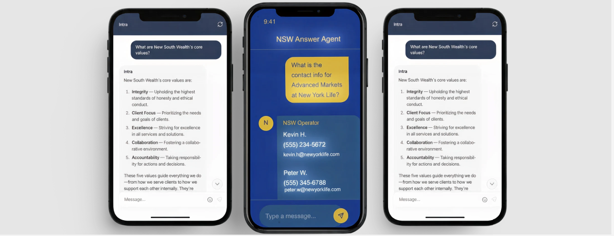

Actionable AI Intelligence For The Always-On Advisor
 Access INTRAFinancial advisors and their teams operate in a complex ecosystem of carriers, compliance requirements, product specifications, and third-party relationships. Critical information—underwriting criteria, account minimums, regulatory updates—used to require phone calls, email chains, and manual searches through outdated documentation.
This created a recurring time tax. Teams paused productive work to hunt for answers. Momentum stalled. Hours accumulated.
INTRA centralizes operational knowledge into a searchable, AI-powered system. Instead of interrupting workflows to retrieve information, advisors query INTRA and receive verified answers in seconds.
Built for New South Wealth Management—INTRA eliminates information retrieval bottlenecks across compliance, underwriting, product specifications, and operations procedures.
Learn to query INTRA effectively. Best practices for framing questions and integrating retrieval into daily workflows.
View Guide →Browse the complete knowledge base. Regulatory updates, operations procedures, carrier requirements, and technical references.
Explore Docs →Understand INTRA's full capabilities. Coverage areas, success metrics, and the knowledge expansion roadmap.
See Coverage →